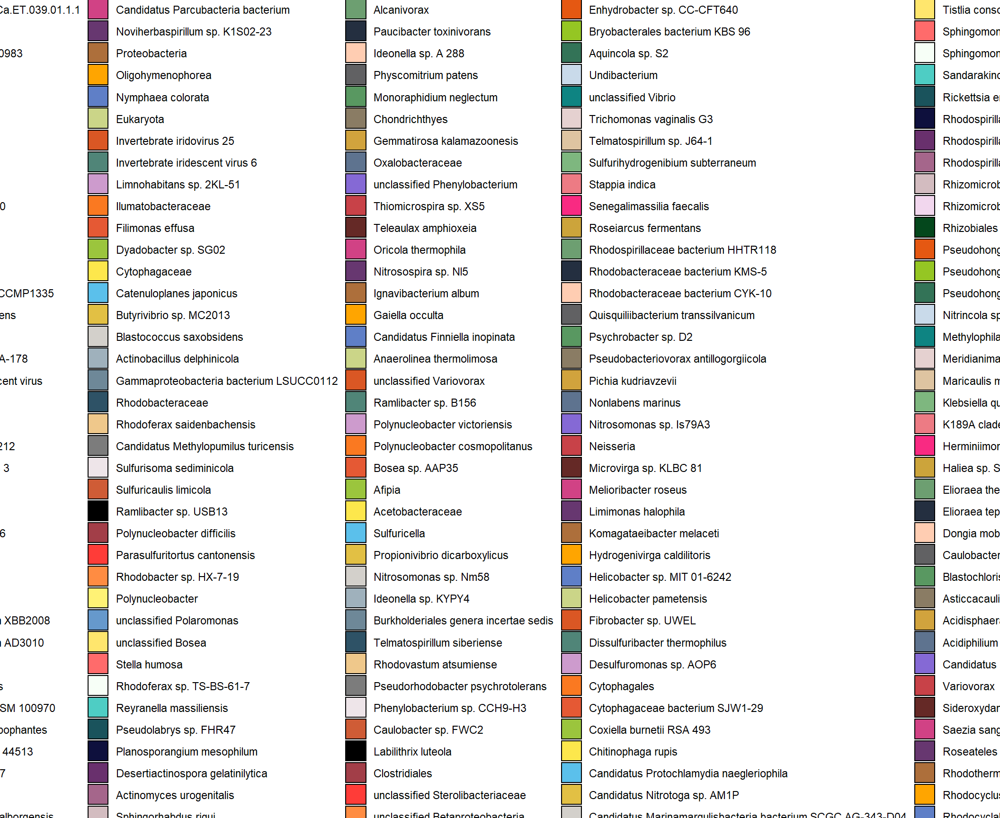

taxonomy_assignment_and_analysis
KiseokUchicago
2021-03-16
Last updated: 2021-03-16
Checks: 7 0
Knit directory: BH_Diel/
This reproducible R Markdown analysis was created with workflowr (version 1.6.2). The Checks tab describes the reproducibility checks that were applied when the results were created. The Past versions tab lists the development history.
Great! Since the R Markdown file has been committed to the Git repository, you know the exact version of the code that produced these results.
Great job! The global environment was empty. Objects defined in the global environment can affect the analysis in your R Markdown file in unknown ways. For reproduciblity it’s best to always run the code in an empty environment.
The command set.seed(20210222) was run prior to running the code in the R Markdown file. Setting a seed ensures that any results that rely on randomness, e.g. subsampling or permutations, are reproducible.
Great job! Recording the operating system, R version, and package versions is critical for reproducibility.
Nice! There were no cached chunks for this analysis, so you can be confident that you successfully produced the results during this run.
Great job! Using relative paths to the files within your workflowr project makes it easier to run your code on other machines.
Great! You are using Git for version control. Tracking code development and connecting the code version to the results is critical for reproducibility.
The results in this page were generated with repository version 8ec4285. See the Past versions tab to see a history of the changes made to the R Markdown and HTML files.
Note that you need to be careful to ensure that all relevant files for the analysis have been committed to Git prior to generating the results (you can use wflow_publish or wflow_git_commit). workflowr only checks the R Markdown file, but you know if there are other scripts or data files that it depends on. Below is the status of the Git repository when the results were generated:
Ignored files:
Ignored: .Rhistory
Ignored: .Rproj.user/
Untracked files:
Untracked: 01_IPTL-CyanoSUMI-MI41M-18OMix-16O-A-T1-BDCL_filtered_PSMs.tsv
Untracked: 01_IPTL-CyanoSUMI-MI41M-18OMix-16O-A-T1-BDCL_filtered_PSMs.xlsx
Untracked: 02_IPTL-CyanoSUMI-MI41M-18OMix-16O-A-T1-DCL_filtered_PSMs.tsv
Untracked: 02_IPTL-CyanoSUMI-MI41M-18OMix-16O-A-T1-DCL_filtered_PSMs.xlsx
Untracked: 03_IPTL-CyanoSUMI-MI41M-18OMix-16O-A-T1-SRF_filtered_PSMs.tsv
Untracked: 03_IPTL-CyanoSUMI-MI41M-18OMix-16O-A-T1-SRF_filtered_PSMs.xlsx
Untracked: 04_IPTL-CyanoSUMI-MI41M-18OMix-16O-A-T2-BDCL_filtered_PSMs.tsv
Untracked: 04_IPTL-CyanoSUMI-MI41M-18OMix-16O-A-T2-BDCL_filtered_PSMs.xlsx
Untracked: 05_IPTL-CyanoSUMI-MI41M-18OMix-16O-A-T2-DCL_filtered_PSMs.tsv
Untracked: 05_IPTL-CyanoSUMI-MI41M-18OMix-16O-A-T2-DCL_filtered_PSMs.xlsx
Untracked: 06_IPTL-CyanoSUMI-MI41M-18OMix-16O-A-T2-SRF_filtered_PSMs.tsv
Untracked: 06_IPTL-CyanoSUMI-MI41M-18OMix-16O-A-T2-SRF_filtered_PSMs.xlsx
Untracked: 07_IPTL-CyanoSUMI-MI41M-18OMix-16O-A-T3-BDCL_filtered_PSMs.tsv
Untracked: 07_IPTL-CyanoSUMI-MI41M-18OMix-16O-A-T3-BDCL_filtered_PSMs.xlsx
Untracked: 08_IPTL-CyanoSUMI-MI41M-18OMix-16O-A-T3-DCL_filtered_PSMs.tsv
Untracked: 08_IPTL-CyanoSUMI-MI41M-18OMix-16O-A-T3-DCL_filtered_PSMs.xlsx
Untracked: 09_IPTL-CyanoSUMI-MI41M-18OMix-16O-A-T3-SRF_filtered_PSMs.tsv
Untracked: 09_IPTL-CyanoSUMI-MI41M-18OMix-16O-A-T3-SRF_filtered_PSMs.xlsx
Untracked: 10_IPTL-CyanoSUMI-MI41M-18OMix-16O-A-T4-BDCL_filtered_PSMs.tsv
Untracked: 10_IPTL-CyanoSUMI-MI41M-18OMix-16O-A-T4-BDCL_filtered_PSMs.xlsx
Untracked: 11_IPTL-CyanoSUMI-MI41M-18OMix-16O-A-T4-DCL_filtered_PSMs.tsv
Untracked: 11_IPTL-CyanoSUMI-MI41M-18OMix-16O-A-T4-DCL_filtered_PSMs.xlsx
Untracked: 12_IPTL-CyanoSUMI-MI41M-18OMix-16O-A-T4-SRF_filtered_PSMs.tsv
Untracked: 12_IPTL-CyanoSUMI-MI41M-18OMix-16O-A-T4-SRF_filtered_PSMs.xlsx
Untracked: 13_IPTL-CyanoSUMI-MI41M-18OMix-16O-A-T5-BDCL_filtered_PSMs.tsv
Untracked: 13_IPTL-CyanoSUMI-MI41M-18OMix-16O-A-T5-BDCL_filtered_PSMs.xlsx
Untracked: 14_IPTL-CyanoSUMI-MI41M-18OMix-16O-A-T5-DCL_filtered_PSMs.tsv
Untracked: 14_IPTL-CyanoSUMI-MI41M-18OMix-16O-A-T5-DCL_filtered_PSMs.xlsx
Untracked: 15_IPTL-CyanoSUMI-MI41M-18OMix-16O-A-T5-SRF_filtered_PSMs.tsv
Untracked: 15_IPTL-CyanoSUMI-MI41M-18OMix-16O-A-T5-SRF_filtered_PSMs.xlsx
Untracked: 16_IPTL-CyanoSUMI-MI41M-18OMix-16O-A-T6-BDCL_filtered_PSMs.tsv
Untracked: 16_IPTL-CyanoSUMI-MI41M-18OMix-16O-A-T6-BDCL_filtered_PSMs.xlsx
Untracked: 17_IPTL-CyanoSUMI-MI41M-18OMix-16O-A-T6-DCL_filtered_PSMs.tsv
Untracked: 17_IPTL-CyanoSUMI-MI41M-18OMix-16O-A-T6-DCL_filtered_PSMs.xlsx
Untracked: 18_IPTL-CyanoSUMI-MI41M-18OMix-16O-A-T6-SRF_filtered_PSMs.tsv
Untracked: 18_IPTL-CyanoSUMI-MI41M-18OMix-16O-A-T6-SRF_filtered_PSMs.xlsx
Untracked: 19_IPTL-CyanoSUMI-MI41M-18OMix-16O-A-T7-DCL_filtered_PSMs.tsv
Untracked: 19_IPTL-CyanoSUMI-MI41M-18OMix-16O-A-T7-DCL_filtered_PSMs.xlsx
Untracked: 20_IPTL-CyanoSUMI-MI41M-18OMix-16O-A-T7-SRF_filtered_PSMs.tsv
Untracked: 20_IPTL-CyanoSUMI-MI41M-18OMix-16O-A-T7-SRF_filtered_PSMs.xlsx
Untracked: 21_IPTL-CyanoSUMI-MI41M-18OMix-16O-A-T8-BDCL_filtered_PSMs.tsv
Untracked: 21_IPTL-CyanoSUMI-MI41M-18OMix-16O-A-T8-BDCL_filtered_PSMs.xlsx
Untracked: 22_IPTL-CyanoSUMI-MI41M-18OMix-16O-A-T8-DCL_filtered_PSMs.tsv
Untracked: 22_IPTL-CyanoSUMI-MI41M-18OMix-16O-A-T8-DCL_filtered_PSMs.xlsx
Untracked: 23_IPTL-CyanoSUMI-MI41M-18OMix-16O-A-T8-SRF_filtered_PSMs.tsv
Untracked: 23_IPTL-CyanoSUMI-MI41M-18OMix-16O-A-T8-SRF_filtered_PSMs.xlsx
Untracked: 24_IPTL-CyanoSUMI-MI41M-18OMix-16O-B-T1-BDCL_filtered_PSMs.tsv
Untracked: 24_IPTL-CyanoSUMI-MI41M-18OMix-16O-B-T1-BDCL_filtered_PSMs.xlsx
Untracked: 25_IPTL-CyanoSUMI-MI41M-18OMix-16O-B-T1-DCL_filtered_PSMs.tsv
Untracked: 25_IPTL-CyanoSUMI-MI41M-18OMix-16O-B-T1-DCL_filtered_PSMs.xlsx
Untracked: 26_IPTL-CyanoSUMI-MI41M-18OMix-16O-B-T1-SRF_filtered_PSMs.tsv
Untracked: 26_IPTL-CyanoSUMI-MI41M-18OMix-16O-B-T1-SRF_filtered_PSMs.xlsx
Untracked: 27_IPTL-CyanoSUMI-MI41M-18OMix-16O-B-T2-BDCL_filtered_PSMs.tsv
Untracked: 27_IPTL-CyanoSUMI-MI41M-18OMix-16O-B-T2-BDCL_filtered_PSMs.xlsx
Untracked: 28_IPTL-CyanoSUMI-MI41M-18OMix-16O-B-T2-DCL_filtered_PSMs.tsv
Untracked: 28_IPTL-CyanoSUMI-MI41M-18OMix-16O-B-T2-DCL_filtered_PSMs.xlsx
Untracked: 29_IPTL-CyanoSUMI-MI41M-18OMix-16O-B-T2-SRF_filtered_PSMs.tsv
Untracked: 29_IPTL-CyanoSUMI-MI41M-18OMix-16O-B-T2-SRF_filtered_PSMs.xlsx
Untracked: 30_IPTL-CyanoSUMI-MI41M-18OMix-16O-B-T3-BDCL_filtered_PSMs.tsv
Untracked: 30_IPTL-CyanoSUMI-MI41M-18OMix-16O-B-T3-BDCL_filtered_PSMs.xlsx
Untracked: 31_IPTL-CyanoSUMI-MI41M-18OMix-16O-B-T3-DCL_filtered_PSMs.tsv
Untracked: 31_IPTL-CyanoSUMI-MI41M-18OMix-16O-B-T3-DCL_filtered_PSMs.xlsx
Untracked: 32_IPTL-CyanoSUMI-MI41M-18OMix-16O-B-T3-SRF_filtered_PSMs.tsv
Untracked: 32_IPTL-CyanoSUMI-MI41M-18OMix-16O-B-T3-SRF_filtered_PSMs.xlsx
Untracked: 33_IPTL-CyanoSUMI-MI41M-18OMix-16O-B-T4-BDCL_filtered_PSMs.tsv
Untracked: 33_IPTL-CyanoSUMI-MI41M-18OMix-16O-B-T4-BDCL_filtered_PSMs.xlsx
Untracked: 34_IPTL-CyanoSUMI-MI41M-18OMix-16O-B-T4-DCL_filtered_PSMs.tsv
Untracked: 34_IPTL-CyanoSUMI-MI41M-18OMix-16O-B-T4-DCL_filtered_PSMs.xlsx
Untracked: 35_IPTL-CyanoSUMI-MI41M-18OMix-16O-B-T4-SRF_filtered_PSMs.tsv
Untracked: 35_IPTL-CyanoSUMI-MI41M-18OMix-16O-B-T4-SRF_filtered_PSMs.xlsx
Untracked: 36_IPTL-CyanoSUMI-MI41M-18OMix-16O-B-T5-BDCL_filtered_PSMs.tsv
Untracked: 36_IPTL-CyanoSUMI-MI41M-18OMix-16O-B-T5-BDCL_filtered_PSMs.xlsx
Untracked: 37_IPTL-CyanoSUMI-MI41M-18OMix-16O-B-T5-DCL_filtered_PSMs.tsv
Untracked: 37_IPTL-CyanoSUMI-MI41M-18OMix-16O-B-T5-DCL_filtered_PSMs.xlsx
Untracked: 38_IPTL-CyanoSUMI-MI41M-18OMix-16O-B-T5-SRF_filtered_PSMs.tsv
Untracked: 38_IPTL-CyanoSUMI-MI41M-18OMix-16O-B-T5-SRF_filtered_PSMs.xlsx
Untracked: 39_IPTL-CyanoSUMI-MI41M-18OMix-16O-B-T6-BDCL_filtered_PSMs.tsv
Untracked: 39_IPTL-CyanoSUMI-MI41M-18OMix-16O-B-T6-BDCL_filtered_PSMs.xlsx
Untracked: 40_IPTL-CyanoSUMI-MI41M-18OMix-16O-B-T6-DCL_filtered_PSMs.tsv
Untracked: 40_IPTL-CyanoSUMI-MI41M-18OMix-16O-B-T6-DCL_filtered_PSMs.xlsx
Untracked: 41_IPTL-CyanoSUMI-MI41M-18OMix-16O-B-T6-SRF_filtered_PSMs.tsv
Untracked: 41_IPTL-CyanoSUMI-MI41M-18OMix-16O-B-T6-SRF_filtered_PSMs.xlsx
Untracked: 42_IPTL-CyanoSUMI-MI41M-18OMix-16O-B-T7-BDCL_filtered_PSMs.tsv
Untracked: 42_IPTL-CyanoSUMI-MI41M-18OMix-16O-B-T7-BDCL_filtered_PSMs.xlsx
Untracked: 43_IPTL-CyanoSUMI-MI41M-18OMix-16O-B-T7-DCL_filtered_PSMs.tsv
Untracked: 43_IPTL-CyanoSUMI-MI41M-18OMix-16O-B-T7-DCL_filtered_PSMs.xlsx
Untracked: 44_IPTL-CyanoSUMI-MI41M-18OMix-16O-B-T7-SRF_filtered_PSMs.tsv
Untracked: 44_IPTL-CyanoSUMI-MI41M-18OMix-16O-B-T7-SRF_filtered_PSMs.xlsx
Untracked: 45_IPTL-CyanoSUMI-MI41M-18OMix-16O-B-T8-BDCL_filtered_PSMs.tsv
Untracked: 45_IPTL-CyanoSUMI-MI41M-18OMix-16O-B-T8-BDCL_filtered_PSMs.xlsx
Untracked: 46_IPTL-CyanoSUMI-MI41M-18OMix-16O-B-T8-DCL_filtered_PSMs.tsv
Untracked: 46_IPTL-CyanoSUMI-MI41M-18OMix-16O-B-T8-DCL_filtered_PSMs.xlsx
Untracked: 47_IPTL-CyanoSUMI-MI41M-18OMix-16O-B-T8-SRF_filtered_PSMs.tsv
Untracked: 47_IPTL-CyanoSUMI-MI41M-18OMix-16O-B-T8-SRF_filtered_PSMs.xlsx
Untracked: 48_IPTL-CyanoSUMI-MI41M-18OMix-16O-C-T1-BDCL_filtered_PSMs.tsv
Untracked: 48_IPTL-CyanoSUMI-MI41M-18OMix-16O-C-T1-BDCL_filtered_PSMs.xlsx
Untracked: 49_IPTL-CyanoSUMI-MI41M-18OMix-16O-C-T1-DCL_filtered_PSMs.tsv
Untracked: 49_IPTL-CyanoSUMI-MI41M-18OMix-16O-C-T1-DCL_filtered_PSMs.xlsx
Untracked: 50_IPTL-CyanoSUMI-MI41M-18OMix-16O-C-T1-SRF_filtered_PSMs.tsv
Untracked: 50_IPTL-CyanoSUMI-MI41M-18OMix-16O-C-T1-SRF_filtered_PSMs.xlsx
Untracked: 51_IPTL-CyanoSUMI-MI41M-18OMix-16O-C-T3-BDCL_filtered_PSMs.tsv
Untracked: 51_IPTL-CyanoSUMI-MI41M-18OMix-16O-C-T3-BDCL_filtered_PSMs.xlsx
Untracked: 52_IPTL-CyanoSUMI-MI41M-18OMix-16O-C-T3-DCL_filtered_PSMs.tsv
Untracked: 52_IPTL-CyanoSUMI-MI41M-18OMix-16O-C-T3-DCL_filtered_PSMs.xlsx
Untracked: 53_IPTL-CyanoSUMI-MI41M-18OMix-16O-C-T3-SRF_filtered_PSMs.tsv
Untracked: 53_IPTL-CyanoSUMI-MI41M-18OMix-16O-C-T3-SRF_filtered_PSMs.xlsx
Untracked: 54_IPTL-CyanoSUMI-MI41M-18OMix-16O-C-T4-BDCL_filtered_PSMs.tsv
Untracked: 54_IPTL-CyanoSUMI-MI41M-18OMix-16O-C-T4-BDCL_filtered_PSMs.xlsx
Untracked: 55_IPTL-CyanoSUMI-MI41M-18OMix-16O-C-T4-DCL_filtered_PSMs.tsv
Untracked: 55_IPTL-CyanoSUMI-MI41M-18OMix-16O-C-T4-DCL_filtered_PSMs.xlsx
Untracked: 56_IPTL-CyanoSUMI-MI41M-18OMix-16O-C-T4-SRF_filtered_PSMs.tsv
Untracked: 56_IPTL-CyanoSUMI-MI41M-18OMix-16O-C-T4-SRF_filtered_PSMs.xlsx
Untracked: 57_IPTL-CyanoSUMI-MI41M-18OMix-16O-C-T5-BDCL_filtered_PSMs.tsv
Untracked: 57_IPTL-CyanoSUMI-MI41M-18OMix-16O-C-T5-BDCL_filtered_PSMs.xlsx
Untracked: 58_IPTL-CyanoSUMI-MI41M-18OMix-16O-C-T5-DCL_filtered_PSMs.tsv
Untracked: 58_IPTL-CyanoSUMI-MI41M-18OMix-16O-C-T5-DCL_filtered_PSMs.xlsx
Untracked: 59_IPTL-CyanoSUMI-MI41M-18OMix-16O-C-T5-SRF_filtered_PSMs.tsv
Untracked: 59_IPTL-CyanoSUMI-MI41M-18OMix-16O-C-T5-SRF_filtered_PSMs.xlsx
Untracked: 60_IPTL-CyanoSUMI-MI41M-18OMix-16O-C-T6-BDCL_filtered_PSMs.tsv
Untracked: 60_IPTL-CyanoSUMI-MI41M-18OMix-16O-C-T6-BDCL_filtered_PSMs.xlsx
Untracked: 61_IPTL-CyanoSUMI-MI41M-18OMix-16O-C-T6-DCL_filtered_PSMs.tsv
Untracked: 61_IPTL-CyanoSUMI-MI41M-18OMix-16O-C-T6-DCL_filtered_PSMs.xlsx
Untracked: 62_IPTL-CyanoSUMI-MI41M-18OMix-16O-C-T6-SRF_filtered_PSMs.tsv
Untracked: 62_IPTL-CyanoSUMI-MI41M-18OMix-16O-C-T6-SRF_filtered_PSMs.xlsx
Untracked: 63_IPTL-CyanoSUMI-MI41M-18OMix-16O-C-T7-BDCL_filtered_PSMs.tsv
Untracked: 63_IPTL-CyanoSUMI-MI41M-18OMix-16O-C-T7-BDCL_filtered_PSMs.xlsx
Untracked: 64_IPTL-CyanoSUMI-MI41M-18OMix-16O-C-T7-DCL_filtered_PSMs.tsv
Untracked: 64_IPTL-CyanoSUMI-MI41M-18OMix-16O-C-T7-DCL_filtered_PSMs.xlsx
Untracked: 65_IPTL-CyanoSUMI-MI41M-18OMix-16O-C-T8-BDCL_filtered_PSMs.tsv
Untracked: 65_IPTL-CyanoSUMI-MI41M-18OMix-16O-C-T8-BDCL_filtered_PSMs.xlsx
Untracked: 66_IPTL-CyanoSUMI-MI41M-18OMix-16O-C-T8-DCL_filtered_PSMs.tsv
Untracked: 66_IPTL-CyanoSUMI-MI41M-18OMix-16O-C-T8-DCL_filtered_PSMs.xlsx
Untracked: 67_IPTL-CyanoSUMI-MI41M-18OMix-16O-C-T8-SRF_filtered_PSMs.tsv
Untracked: 67_IPTL-CyanoSUMI-MI41M-18OMix-16O-C-T8-SRF_filtered_PSMs.xlsx
Untracked: Hist_freq_of_peptide_id.pdf
Untracked: Hist_intensity_replicate_centered.pdf
Untracked: Hist_intensity_replicate_not_centered.pdf
Untracked: Hist_intensity_spec_level_centered.pdf
Untracked: Hist_intensity_spec_level_not_centered.pdf
Untracked: Hist_number of timepoints_peptide_appears.pdf
Untracked: P1_number_unique_peptide_per_sample.pdf
Untracked: P2_number_of_cumulative_unique_peptides.pdf
Untracked: Peptide_id.tsv
Untracked: Replicate_ABC50_combined.tsv
Untracked: Replicate_ABC50_combined.xlsx
Untracked: Replicate_ABC63_combined.tsv
Untracked: Replicate_ABC63_combined.xlsx
Untracked: Replicate_ABC67_combined.tsv
Untracked: Replicate_ABC67_combined.xlsx
Untracked: Replicate_BC_combined.tsv
Untracked: Replicate_BC_combined.xlsx
Untracked: Replicate_B_combined.tsv
Untracked: Replicate_B_combined.xlsx
Untracked: Taxonomy_genus.pdf
Untracked: Taxonomy_order.pdf
Untracked: Taxonomy_phylum.pdf
Untracked: Taxonomy_species.pdf
Untracked: Taxonomy_strain.pdf
Untracked: Taxonoy_family.pdf
Untracked: Time_series_intesity_all.pdf
Untracked: data/Final_pep_seq_ORF_rankedlineage.tsv
Untracked: data/Time_metadata.txt
Untracked: data/counts_example.csv
Untracked: data/diel-Feb21/
Untracked: data/diel-Feb25/
Untracked: data/diel-Feb26/
Untracked: data/diel-Mar2/
Untracked: data/synthetic_control.data.txt
Untracked: hclust_DTW_average_wide.pdf
Untracked: hclust_DTW_average_wide_after_normalization.pdf
Note that any generated files, e.g. HTML, png, CSS, etc., are not included in this status report because it is ok for generated content to have uncommitted changes.
These are the previous versions of the repository in which changes were made to the R Markdown (analysis/taxonomy_assignment_and_analysis.Rmd) and HTML (docs/taxonomy_assignment_and_analysis.html) files. If you’ve configured a remote Git repository (see ?wflow_git_remote), click on the hyperlinks in the table below to view the files as they were in that past version.
| File | Version | Author | Date | Message |
|---|---|---|---|---|
| Rmd | 8ec4285 | KiseokUchicago | 2021-03-16 | taxonomy |
Taxonomy assignment to peptides and taxonomy profiling analysis
# libraries
library(dplyr)
library(tidyr)
library(stringr)
library(ggplot2)
library(formattable)0. Get the rhythmic(periodic) peptide_ids from the rain analysis (from previous script of “peptide_level_visualization.Rmd”)
# read in combined table of 24 samples (Replicate B)
df_pep <- read.table("Replicate_ABC67_combined.tsv",sep='\t',header = T)
# Let's try to plot all of them at once
df_all <- df_pep %>% select(Peptide_id, SampleID, Time, Depth) %>% unique() %>% arrange(Peptide_id)
# How many time points did it appear
(df_all2 <- df_all %>% group_by(Peptide_id, Depth) %>% summarize(Timepoints = n_distinct(Time)) %>% ungroup())# A tibble: 6,104 x 3
Peptide_id Depth Timepoints
<chr> <chr> <int>
1 Pep_1 BDCL 8
2 Pep_1 DCL 8
3 Pep_1 SRF 8
4 Pep_10 BDCL 8
5 Pep_10 DCL 8
6 Pep_10 SRF 8
7 Pep_100 BDCL 8
8 Pep_100 DCL 8
9 Pep_100 SRF 8
10 Pep_1000 BDCL 1
# ... with 6,094 more rowsdf_all2$Depth <- factor(df_all2$Depth, levels = c('SRF','DCL','BDCL'))
# (1) Get list of peptides that are present in 7 or 8 timepoints
df_all2_filt <- df_all2 %>% filter(Timepoints > 6) %>% unique()
# (2) Let's average the abundance_ratio for each unique peptide
df_int <- df_pep %>% select(Peptide_id, Spec_id, cent.log2.16O.18O.Ratio, SampleID, Time, Depth, Replicate) %>%
unique() %>% arrange(Peptide_id)
# first average the spectrum_id per sample
# important to make sure to take the mean of the log raio (instead of taking log2 after averaging the original value(2^x))
df_ave <- df_int %>% group_by(SampleID, Time, Depth, Replicate, Peptide_id) %>%
summarize(Mean_abundance_ratio=mean(cent.log2.16O.18O.Ratio),
SD_pep=sd(cent.log2.16O.18O.Ratio)) %>% ungroup()
# Now, average and error by replicate
# SE calculated with Jake Waldbauer's method: sqrt(se(Mean_abundance_ratio)^2 +(mean(SD_pep))^2))
# standard error
se <- function(x) sd(x)/sqrt(length(x))
df_ave_rep <- df_ave %>% group_by(Time, Depth, Peptide_id) %>%
summarize(Ave_abundance_ratio=mean(Mean_abundance_ratio),
SE_abundance_ratio=sqrt((se(Mean_abundance_ratio))^2 +(mean(SD_pep))^2)) %>% ungroup()
# why is there no sd for Pep_1004?
df_ave %>% group_by(SampleID) %>% filter(Peptide_id=='Pep_1003') # there is only 1 sample for T1 BDCL # A tibble: 10 x 7
# Groups: SampleID [10]
SampleID Time Depth Replicate Peptide_id Mean_abundance_ratio SD_pep
<chr> <chr> <chr> <chr> <chr> <dbl> <dbl>
1 BDCL_T1_B T1 BDCL B Pep_1003 0.0789 NA
2 BDCL_T7_B T7 BDCL B Pep_1003 -0.0795 NA
3 DCL_T3_A T3 DCL A Pep_1003 0.248 NA
4 SRF_T1_A T1 SRF A Pep_1003 0.293 0.125
5 SRF_T1_B T1 SRF B Pep_1003 -0.102 NA
6 SRF_T2_A T2 SRF A Pep_1003 0.308 NA
7 SRF_T3_A T3 SRF A Pep_1003 0.288 0.00194
8 SRF_T3_B T3 SRF B Pep_1003 0.0473 0.138
9 SRF_T4_A T4 SRF A Pep_1003 0.205 0.0673
10 SRF_T4_B T4 SRF B Pep_1003 0.0444 0.196 df_ave_rep2 <- df_ave_rep %>% mutate(error_up=Ave_abundance_ratio+SE_abundance_ratio) %>%
mutate(error_down=Ave_abundance_ratio-SE_abundance_ratio)
# (3) import time metadata and merge
(df_time <- read.table('data/Time_metadata.txt', header=T, sep='\t')) timepoint date_time elapsed_hours
1 T1 6/26/2019 12:45:00 0
2 T2 6/26/2019 15:45:00 3
3 T3 6/26/2019 18:45:00 6
4 T4 6/26/2019 21:45:00 9
5 T5 6/27/2019 4:40:00 15
6 T6 6/27/2019 7:45:00 19
7 T7 6/27/2019 10:45:00 22
8 T8 6/27/2019 13:45:00 25df_time$date_time <- str_replace(df_time$date_time, "/2019"," ")
df_time$date_time <- str_replace(df_time$date_time, ":00$","")
# left_join with average data
df_ave2 <- df_ave_rep2 %>% left_join(df_time, by=c('Time'='timepoint'))
head(df_ave2)# A tibble: 6 x 9
Time Depth Peptide_id Ave_abundance_rat~ SE_abundance_ra~ error_up error_down
<chr> <chr> <chr> <dbl> <dbl> <dbl> <dbl>
1 T1 BDCL Pep_1 0.0796 0.330 0.410 -0.251
2 T1 BDCL Pep_10 -0.185 0.270 0.0858 -0.455
3 T1 BDCL Pep_100 0.214 0.149 0.363 0.0658
4 T1 BDCL Pep_1003 0.0789 NA NA NA
5 T1 BDCL Pep_1007 0.244 NA NA NA
6 T1 BDCL Pep_1008 -0.340 NA NA NA
# ... with 2 more variables: date_time <chr>, elapsed_hours <int># only use peptides that appear 7 or 8 times
df_ave2 %>% select(Peptide_id) %>% unique() %>% dim() # 3233 peptides before[1] 3366 1df_filt78 <- inner_join(df_ave2, df_all2_filt, by=c('Peptide_id'='Peptide_id','Depth'='Depth'))
df_filt78$Depth <- factor(df_filt78$Depth, levels = c('SRF','DCL','BDCL'))
# get only 8 ones
df_filt8 <- df_filt78 %>% filter(Timepoints > 7)
df_filt8 %>% select(Peptide_id) %>% unique() %>% dim() # 661 peptides for peptides in all 8 timepoints[1] 661 1df_filt8$Depth <- factor(df_filt8$Depth, levels = c('SRF','DCL','BDCL'))
# rain analysis function
rain_analysis <- function(df_filt8,depth="SRF"){
# setting our data into input format
df_8 <- df_filt8 %>% filter(Depth==depth) %>% select(Peptide_id,Time,Ave_abundance_ratio)
# reshape the dataframe with timepoints
library(maditr)
v_names <- c("T1","T2","T3","T4","T5","T6","T7","T8")
df_8$Time <- factor(df_8$Time, levels=v_names)
dc_8 <- dcast(df_8, Peptide_id ~ Time, value.var = "Ave_abundance_ratio")
# make Peptide_id more simpler (Pep_1 -> 1)
dc_8$Peptide_id <- str_replace(dc_8$Peptide_id,"Pep_","P.")
# make first column into row name
dc_8 <- tibble::column_to_rownames(dc_8, var="Peptide_id")
t <- c(1,0,0,1,0,0,1,0,0,1,0,0,0,0,0,1,0,0,0,1,0,0,1,0,0,1) # adjusted for irregular repeats
# RAIN analysis
library(rain)
rainresult <- rain(t(dc_8), period=8, measure.sequence=t, deltat=1, method='independent')
return(rainresult)
}
rain_SRF8 <- rain_analysis(df_filt8,depth="SRF") %>% mutate(Depth="SRF") %>% tibble::rownames_to_column(var = "Peptide_id")
rain_DCL8 <- rain_analysis(df_filt8,depth="DCL") %>% mutate(Depth="DCL") %>% tibble::rownames_to_column(var = "Peptide_id")
rain_BDCL8 <- rain_analysis(df_filt8,depth="BDCL") %>% mutate(Depth="BDCL") %>% tibble::rownames_to_column(var = "Peptide_id")
dim(rain_SRF8)[1] 532 6dim(rain_DCL8)[1] 426 6dim(rain_BDCL8)[1] 392 6rain_8 <- rbind(rain_SRF8, rain_DCL8) %>% rbind(rain_BDCL8)
dim(rain_8)[1] 1350 6tail(rain_8) Peptide_id pVal phase peak.shape period Depth
1345 P.94 0.5550883 2 6 8 BDCL
1346 P.95 0.3677419 8 3 8 BDCL
1347 P.96 0.9813643 5 4 8 BDCL
1348 P.97 0.8602151 3 5 8 BDCL
1349 P.98 0.8762820 2 6 8 BDCL
1350 P.99 0.6112296 7 3 8 BDCLrain_sig <- rain_8 %>% filter(pVal <= 0.25)
color_vec <- c('#fc8d62','#66c2a5','#8da0cb')
depth_vec <- c('SRF','DCL','BDCL')
rain_sig$Depth <- factor(rain_sig$Depth, levels=depth_vec)
rain_sig$Peptide_id <- str_replace(rain_sig$Peptide_id,"P.","Pep_")1. Input the taxonomy data (created from linux)
Get Final_pep_seq_ORF_rankedlineage.tsv from 05_taxonomy (at /project2/mlcoleman/project/diel_proteomics_kiseok/20210302_diel_proteomics_replicateABC_67samples)
This is a tab-delimited dataframe. Peptide_id Peptide_sequence Strain Species Genus Family Order Class Phylum Phylum Kingdom
The blanks are denoted as “NULL”
# read in the dataframe and change "NULL" to NA
df_peptax <- read.table("data/Final_pep_seq_ORF_rankedlineage.tsv",sep='\t',header = F,na.strings=c("NULL","NA"))
colnames(df_peptax) <- c("Peptide_id","Peptide_sequence","ORF","Strain","Species","Genus","Family","Order","Class","Phylum","Kingdom","Domain")
df_peptax %>% select(Kingdom) %>% unique() Kingdom
1 <NA>
1088 Viridiplantae
1090 Metazoa
1104 Fungi
2542 Bamfordviraedf_peptax %>% select(Domain) %>% unique() Domain
1 <NA>
3 Bacteria
1080 Eukaryota
1727 Viruses
10606 Archaea# Are there NAs in the dataframe?
head(df_peptax) Peptide_id Peptide_sequence ORF
1 Pep_1 AELIDAMAAGSGLSK <NA>
2 Pep_10 TGLIDAAEFNNPSSDR <NA>
3 Pep_100 LLDQGQAGDNVGVLLR c_000000000300_MC10_S8_M_23
4 Pep_100 LLDQGQAGDNVGVLLR c_000000003617_MC13_S11_M_4
5 Pep_100 LLDQGQAGDNVGVLLR c_000000009874_MC5_S3_M_1
6 Pep_100 LLDQGQAGDNVGVLLR c_000000015228_MC13_S11_M_2
Strain Species Genus
1 <NA> <NA> <NA>
2 <NA> <NA> <NA>
3 Candidatus Methylopumilus turicensis <NA> Candidatus Methylopumilus
4 Quisquiliibacterium sp. CC-CFT501 <NA> Quisquiliibacterium
5 Herbaspirillum sp. K2R10-39 <NA> Herbaspirillum
6 Herbaspirillum sp. K2R10-39 <NA> Herbaspirillum
Family Order Class Phylum Kingdom
1 <NA> <NA> <NA> <NA> <NA>
2 <NA> <NA> <NA> <NA> <NA>
3 Methylophilaceae Nitrosomonadales Betaproteobacteria Proteobacteria <NA>
4 Burkholderiaceae Burkholderiales Betaproteobacteria Proteobacteria <NA>
5 Oxalobacteraceae Burkholderiales Betaproteobacteria Proteobacteria <NA>
6 Oxalobacteraceae Burkholderiales Betaproteobacteria Proteobacteria <NA>
Domain
1 <NA>
2 <NA>
3 Bacteria
4 Bacteria
5 Bacteria
6 Bacteriadim(df_peptax)[1] 33400 12any(is.na(df_peptax))[1] TRUE# first test with the Surface periodic peptides
rhythm_SRF <- rain_sig %>% filter(Depth=="SRF") %>% select(Peptide_id)
rhy_tax_SRF <- rhythm_SRF %>% left_join(df_peptax, by=c("Peptide_id"="Peptide_id"))
rhy_tax_SRF %>% select(Peptide_id) %>% unique() %>% dim() # 69 peptides[1] 69 1# See the distribution of number of matched ORFs
rhy_t <- rhy_tax_SRF %>% group_by(Peptide_id) %>% summarize(freq = n())
ggplot(rhy_t, aes(freq)) + geom_bar() +
ylab("Frequency \n") +
xlab("\n Number of matched ORFs per peptide") +
# scale_x_continuous(breaks=seq(1,8,1))+
ggtitle("Histogram of matched ORFs per peptide (Surface) \n")+
## adjust positions
theme(plot.title = element_text(size = 20,hjust = 0.5, family="serif")) +
theme(axis.title.x = element_text(size = 15,hjust = 0.5, family="serif")) +
theme(axis.title.y = element_text(size = 15,hjust = 0.5, family="serif")) +
theme(axis.text.x = element_text(hjust = 0.5, vjust=0.3,size=13, family="serif"))+
theme(axis.text.y = element_text(size=10))
rhy_tax_SRF %>% left_join(rhy_t, by=c("Peptide_id"="Peptide_id")) %>% filter(freq==1) Peptide_id Peptide_sequence ORF Strain Species Genus Family Order Class
1 Pep_102 AYSTGPDVEALIGK <NA> <NA> <NA> <NA> <NA> <NA> <NA>
2 Pep_113 DVVAVMDSLTQEIQK <NA> <NA> <NA> <NA> <NA> <NA> <NA>
3 Pep_114 AVIALLDIFADK <NA> <NA> <NA> <NA> <NA> <NA> <NA>
4 Pep_117 TAVAIDAIINQK <NA> <NA> <NA> <NA> <NA> <NA> <NA>
5 Pep_123 IIETSVVPSGPQLK <NA> <NA> <NA> <NA> <NA> <NA> <NA>
6 Pep_130 GQADIGLLGSTAGTQLNR <NA> <NA> <NA> <NA> <NA> <NA> <NA>
7 Pep_149 GVELAIDDK <NA> <NA> <NA> <NA> <NA> <NA> <NA>
8 Pep_162 SYTIGDPFGPSK <NA> <NA> <NA> <NA> <NA> <NA> <NA>
9 Pep_174 VNLLSQTTAEAIQK <NA> <NA> <NA> <NA> <NA> <NA> <NA>
10 Pep_190 AVIALLNIFDDR <NA> <NA> <NA> <NA> <NA> <NA> <NA>
11 Pep_192 GAVLSGNMVVSPVIDGR <NA> <NA> <NA> <NA> <NA> <NA> <NA>
12 Pep_215 GEVVNISGFAK <NA> <NA> <NA> <NA> <NA> <NA> <NA>
13 Pep_229 GNYDNILDAK <NA> <NA> <NA> <NA> <NA> <NA> <NA>
14 Pep_256 TVVIPASESVVGTELK <NA> <NA> <NA> <NA> <NA> <NA> <NA>
15 Pep_265 GQADIGLLGATAGTQLNR <NA> <NA> <NA> <NA> <NA> <NA> <NA>
16 Pep_271 GTIDAAEWVGPYDDQK <NA> <NA> <NA> <NA> <NA> <NA> <NA>
17 Pep_28 GVVIVSVDGGR <NA> <NA> <NA> <NA> <NA> <NA> <NA>
18 Pep_284 TTLTAAITTILSK <NA> <NA> <NA> <NA> <NA> <NA> <NA>
19 Pep_29 ITAAGVIQFSPANTSPK <NA> <NA> <NA> <NA> <NA> <NA> <NA>
20 Pep_290 AVLEPILAAGK <NA> <NA> <NA> <NA> <NA> <NA> <NA>
21 Pep_300 DILIEQVQTAPR <NA> <NA> <NA> <NA> <NA> <NA> <NA>
22 Pep_304 ITAAGVVQFSPANTSK <NA> <NA> <NA> <NA> <NA> <NA> <NA>
23 Pep_316 EIANQTGLSQK <NA> <NA> <NA> <NA> <NA> <NA> <NA>
24 Pep_33 AIDATLAAITK <NA> <NA> <NA> <NA> <NA> <NA> <NA>
25 Pep_345 AIIALLDIFNDK <NA> <NA> <NA> <NA> <NA> <NA> <NA>
26 Pep_364 IILNQNDGMVVALDAMTGK <NA> <NA> <NA> <NA> <NA> <NA> <NA>
27 Pep_411 GGNAPDLAWIPQPGLLAK <NA> <NA> <NA> <NA> <NA> <NA> <NA>
28 Pep_416 GNYTNQAYSQLTQINQGNVK <NA> <NA> <NA> <NA> <NA> <NA> <NA>
29 Pep_444 LSGGVAVIR <NA> <NA> <NA> <NA> <NA> <NA> <NA>
30 Pep_446 DIVDTAVGAGNFR <NA> <NA> <NA> <NA> <NA> <NA> <NA>
31 Pep_464 FGAPTITNDGVTVAK <NA> <NA> <NA> <NA> <NA> <NA> <NA>
32 Pep_482 GLFGDLIK <NA> <NA> <NA> <NA> <NA> <NA> <NA>
33 Pep_49 AYSTGSDAEALIGK <NA> <NA> <NA> <NA> <NA> <NA> <NA>
34 Pep_538 FEAGYIAGAK <NA> <NA> <NA> <NA> <NA> <NA> <NA>
35 Pep_593 VGGPIEADLNNYR <NA> <NA> <NA> <NA> <NA> <NA> <NA>
36 Pep_596 LAVGYAGIGIHGTPVGNR <NA> <NA> <NA> <NA> <NA> <NA> <NA>
37 Pep_597 AIISNAVEAASADMSWK <NA> <NA> <NA> <NA> <NA> <NA> <NA>
38 Pep_679 TTEIGIEGFDPTK <NA> <NA> <NA> <NA> <NA> <NA> <NA>
39 Pep_68 AGGLVMISPSATR <NA> <NA> <NA> <NA> <NA> <NA> <NA>
40 Pep_725 LDLPAGVDVEIK <NA> <NA> <NA> <NA> <NA> <NA> <NA>
41 Pep_848 VYEVLSAPGGIER <NA> <NA> <NA> <NA> <NA> <NA> <NA>
42 Pep_851 DSDGGYIQATYVLPTK <NA> <NA> <NA> <NA> <NA> <NA> <NA>
43 Pep_87 SIVALIASINK <NA> <NA> <NA> <NA> <NA> <NA> <NA>
Phylum Kingdom Domain freq
1 <NA> <NA> <NA> 1
2 <NA> <NA> <NA> 1
3 <NA> <NA> <NA> 1
4 <NA> <NA> <NA> 1
5 <NA> <NA> <NA> 1
6 <NA> <NA> <NA> 1
7 <NA> <NA> <NA> 1
8 <NA> <NA> <NA> 1
9 <NA> <NA> <NA> 1
10 <NA> <NA> <NA> 1
11 <NA> <NA> <NA> 1
12 <NA> <NA> <NA> 1
13 <NA> <NA> <NA> 1
14 <NA> <NA> <NA> 1
15 <NA> <NA> <NA> 1
16 <NA> <NA> <NA> 1
17 <NA> <NA> <NA> 1
18 <NA> <NA> <NA> 1
19 <NA> <NA> <NA> 1
20 <NA> <NA> <NA> 1
21 <NA> <NA> <NA> 1
22 <NA> <NA> <NA> 1
23 <NA> <NA> <NA> 1
24 <NA> <NA> <NA> 1
25 <NA> <NA> <NA> 1
26 <NA> <NA> <NA> 1
27 <NA> <NA> <NA> 1
28 <NA> <NA> <NA> 1
29 <NA> <NA> <NA> 1
30 <NA> <NA> <NA> 1
31 <NA> <NA> <NA> 1
32 <NA> <NA> <NA> 1
33 <NA> <NA> <NA> 1
34 <NA> <NA> <NA> 1
35 <NA> <NA> <NA> 1
36 <NA> <NA> <NA> 1
37 <NA> <NA> <NA> 1
38 <NA> <NA> <NA> 1
39 <NA> <NA> <NA> 1
40 <NA> <NA> <NA> 1
41 <NA> <NA> <NA> 1
42 <NA> <NA> <NA> 1
43 <NA> <NA> <NA> 1rhy_tax_SRF %>% left_join(rhy_t, by=c("Peptide_id"="Peptide_id")) %>% filter(freq==1) %>% dim()[1] 43 13rhy_tax_SRF1 <- rhy_tax_SRF %>% left_join(rhy_t, by=c("Peptide_id"="Peptide_id"))43 out of 69 peptides have no matches to the ORF.
Let’s work with only the peptides that have ORF matches
1. Lowest common ancester method assignment
# Working only with the peptides that have ORF matches
rhy_tax_SRF2 <- rhy_tax_SRF1 %>% filter(!is.na(ORF))
rhy_tax_SRF2 %>% select(freq) %>% unique() %>% arrange(freq) freq
1 2
2 3
3 5
4 6
5 7
6 8
7 11
8 12
9 15
10 16
11 17
12 18
13 20
14 22
15 23
16 31
17 38
18 89# NA in taxonomy?
rhy_tax_SRF2 %>% filter(is.na(Strain)) Peptide_id Peptide_sequence ORF Strain Species
1 Pep_275 TDLELSGFR c_000000047553_ON33M_5M_1 <NA> <NA>
2 Pep_275 TDLELSGFR c_000000142972_MC11_S9_M_1 <NA> <NA>
3 Pep_275 TDLELSGFR c_000000770352_MC8_S6_M_1 <NA> <NA>
4 Pep_275 TDLELSGFR c_000000818996_ER78M_2M_1 <NA> <NA>
5 Pep_275 TDLELSGFR c_000001444205_MC6_S4_M_1 <NA> <NA>
6 Pep_275 TDLELSGFR c_000001995163_MC6_S4_M_1 <NA> <NA>
7 Pep_317 DTVLLASAMAK c_000001768367_MC14_S12_M_1 <NA> <NA>
8 Pep_492 YLGPAGDNSAWGNVAGAK c_000001529362_MC12_S10_M_1 <NA> <NA>
Genus Family Order Class Phylum Kingdom Domain freq
1 <NA> <NA> <NA> <NA> <NA> <NA> <NA> 20
2 <NA> <NA> <NA> <NA> <NA> <NA> <NA> 20
3 <NA> <NA> <NA> <NA> <NA> <NA> <NA> 20
4 <NA> <NA> <NA> <NA> <NA> <NA> <NA> 20
5 <NA> <NA> <NA> <NA> <NA> <NA> <NA> 20
6 <NA> <NA> <NA> <NA> <NA> <NA> <NA> 20
7 <NA> <NA> <NA> <NA> <NA> <NA> <NA> 22
8 <NA> <NA> <NA> <NA> <NA> <NA> <NA> 17# plot the scientific name level histogram
df.sci <- rhy_tax_SRF2 %>% count(Peptide_id, Strain)
# we need to group by Peptides
df.sci.rel <- df.sci %>%
group_by(Peptide_id) %>%
mutate(RelAbundance = n*100/sum(n)) # Transform to rel. abundance
# df.sci.rel[df.sci.rel$RelAbundance < 5,]$Phylum <- 'Low abundance'
### let's test
ord <- df.sci.rel %>% group_by(Strain) %>% summarise(sumRel = sum(RelAbundance)) %>% arrange(sumRel)
vec <- ord$Strain
rev(tail(vec,10)) [1] "Candidatus Fonsibacter ubiquis"
[2] "Desulfonatronum thiosulfatophilum"
[3] "Limnohabitans sp. Hippo4"
[4] "Candidatus Methylopumilus planktonicus"
[5] "Synechococcus sp. SYN20"
[6] "Rhodoferax sp. IMCC26218"
[7] "Candidatus Planktophila versatilis"
[8] "Nakamurella sp. s14-144"
[9] "Ramlibacter sp. WS9"
[10] "Neptunomonas antarctica" head(vec)[1] "Acetobacteraceae" "Acidiphilium"
[3] "Acidiphilium sp. C61" "Acidisphaera sp. S103"
[5] "Asticcacaulis benevestitus" "Blastochloris tepida" df.sci.rel$Strain <- factor(df.sci.rel$Strain, levels = vec)
my_color <- c(
"black","#CBD588", "#5F7FC7", "orange",
"#AD6F3B", "#673770","#D14285", "#652926", "#C84248",
"#8569D5", "#5E738F","#D1A33D", "#8A7C64", "#599861",
"#616163", "#FFCDB2", "#242F40", "#6D9F71",
"#CCA43B", "#F92A82", "#ED7B84", "#7EB77F",
"#DEC4A1", "#E5D1D0", '#0E8482', '#C9DAEA', '#337357',
'#95C623', '#E55812', '#04471C', '#F2D7EE', '#D3BCC0',
'#A5668B', '#69306D', '#0E103D', '#1A535C', '#4ECDC4',
'#F7FFF7', '#FF6B6B', '#FFE66D', '#6699CC', '#FFF275',
'#FF8C42', '#FF3C38', '#A23E48', '#000000', '#CF5C36',
'#EEE5E9', '#7C7C7C', '#EFC88B', '#2E5266', '#6E8898',
'#9FB1BC', '#D3D0CB', '#E2C044', '#5BC0EB', '#FDE74C',
'#9BC53D', '#E55934', '#FA7921', "#CD9BCD", "#508578", "#DA5724",
"#CBD588", "#5F7FC7", "orange",
"#AD6F3B", "#673770","#D14285", "#652926", "#C84248",
"#8569D5", "#5E738F","#D1A33D", "#8A7C64", "#599861",
"#616163", "#FFCDB2", "#242F40", "#6D9F71",
"#CCA43B", "#F92A82", "#ED7B84", "#7EB77F",
"#DEC4A1", "#E5D1D0", '#0E8482', '#C9DAEA', '#337357',
'#95C623', '#E55812', '#04471C', '#F2D7EE', '#D3BCC0',
'#A5668B', '#69306D', '#0E103D', '#1A535C', '#4ECDC4',
'#F7FFF7', '#FF6B6B', '#FFE66D', '#6699CC', '#FFF275',
'#FF8C42', '#FF3C38', '#A23E48', '#000000', '#CF5C36',
'#EEE5E9', '#7C7C7C', '#EFC88B', '#2E5266', '#6E8898',
'#9FB1BC', '#D3D0CB', '#E2C044', '#5BC0EB', '#FDE74C',
'#9BC53D', '#E55934', '#FA7921', "#CD9BCD", "#508578", "#DA5724",
"#CBD588", "#5F7FC7", "orange",
"#AD6F3B", "#673770","#D14285", "#652926", "#C84248",
"#8569D5", "#5E738F","#D1A33D", "#8A7C64", "#599861",
"#616163", "#FFCDB2", "#242F40", "#6D9F71",
"#CCA43B", "#F92A82", "#ED7B84", "#7EB77F",
"#DEC4A1", "#E5D1D0", '#0E8482', '#C9DAEA', '#337357',
'#95C623', '#E55812', '#04471C', '#F2D7EE', '#D3BCC0',
'#A5668B', '#69306D', '#0E103D', '#1A535C', '#4ECDC4',
'#F7FFF7', '#FF6B6B', '#FFE66D', '#6699CC', '#FFF275',
'#FF8C42', '#FF3C38', '#A23E48', '#000000', '#CF5C36',
'#EEE5E9', '#7C7C7C', '#EFC88B', '#2E5266', '#6E8898',
'#9FB1BC', '#D3D0CB', '#E2C044', '#5BC0EB', '#FDE74C',
'#9BC53D', '#E55934', '#FA7921', "#CD9BCD", "#508578", "#DA5724",
"#CBD588", "#5F7FC7", "orange",
"#AD6F3B", "#673770","#D14285", "#652926", "#C84248",
"#8569D5", "#5E738F","#D1A33D", "#8A7C64", "#599861",
"#616163", "#FFCDB2", "#242F40", "#6D9F71",
"#CCA43B", "#F92A82", "#ED7B84", "#7EB77F",
"#DEC4A1", "#E5D1D0", '#0E8482', '#C9DAEA', '#337357',
'#95C623', '#E55812', '#04471C', '#F2D7EE', '#D3BCC0',
'#A5668B', '#69306D', '#0E103D', '#1A535C', '#4ECDC4',
'#F7FFF7', '#FF6B6B', '#FFE66D', '#6699CC', '#FFF275',
'#FF8C42', '#FF3C38', '#A23E48', '#000000', '#CF5C36',
'#EEE5E9', '#7C7C7C', '#EFC88B', '#2E5266', '#6E8898',
'#9FB1BC', '#D3D0CB', '#E2C044', '#5BC0EB', '#FDE74C',
'#9BC53D', '#E55934', '#FA7921', "#CD9BCD", "#508578", "#DA5724",
"#CBD588", "#5F7FC7", "orange",
"#AD6F3B", "#673770","#D14285", "#652926", "#C84248",
"#8569D5", "#5E738F","#D1A33D", "#8A7C64", "#599861",
"#616163", "#FFCDB2", "#242F40", "#6D9F71",
"#CCA43B", "#F92A82", "#ED7B84", "#7EB77F",
"#DEC4A1", "#E5D1D0", '#0E8482', '#C9DAEA', '#337357',
'#95C623', '#E55812', '#04471C', '#F2D7EE', '#D3BCC0',
'#A5668B', '#69306D', '#0E103D', '#1A535C', '#4ECDC4',
'#F7FFF7', '#FF6B6B', '#FFE66D', '#6699CC', '#FFF275',
'#FF8C42', '#FF3C38', '#A23E48', '#000000', '#CF5C36',
'#EEE5E9', '#7C7C7C', '#EFC88B', '#2E5266', '#6E8898',
'#9FB1BC', '#D3D0CB', '#E2C044', '#5BC0EB', '#FDE74C',
'#9BC53D', '#E55934', '#FA7921', "#CD9BCD", "#508578", "#DA5724",
"#CBD588", "#5F7FC7", "orange",
"#AD6F3B", "#673770","#D14285", "#652926", "#C84248",
"#8569D5", "#5E738F","#D1A33D", "#8A7C64", "#599861",
"#616163", "#FFCDB2", "#242F40", "#6D9F71",
"#CCA43B", "#F92A82", "#ED7B84", "#7EB77F",
"#DEC4A1", "#E5D1D0", '#0E8482', '#C9DAEA', '#337357',
'#95C623', '#E55812', '#04471C', '#F2D7EE', '#D3BCC0',
'#A5668B', '#69306D', '#0E103D', '#1A535C', '#4ECDC4',
'#F7FFF7', '#FF6B6B', '#FFE66D', '#6699CC', '#FFF275',
'#FF8C42', '#FF3C38', '#A23E48', '#000000', '#CF5C36',
'#EEE5E9', '#7C7C7C', '#EFC88B', '#2E5266', '#6E8898',
'#9FB1BC', '#D3D0CB', '#E2C044', '#5BC0EB', '#FDE74C',
'#9BC53D', '#E55934', '#FA7921', "#CD9BCD", "#508578", "#DA5724",
"#CBD588", "#5F7FC7", "orange")
my_color2 <- c(
"#CBD588", "#DA5724","#AD6F3B", "#673770","#D14285",
"#652926", "#C84248", "#8569D5", "#5E738F","#D1A33D",
"#8A7C64", "#599861", "#616163", "#FFCDB2", "#242F40",
"#6D9F71", "#CCA43B", "#F92A82", "#ED7B84", "#7EB77F",
"#DEC4A1", "#E5D1D0", '#0E8482', '#C9DAEA', '#337357',
'#95C623', '#E55812', '#04471C', '#F2D7EE', '#D3BCC0',
'#A5668B', '#69306D', '#0E103D', '#1A535C', '#4ECDC4',
'#F7FFF7', '#FF6B6B', '#FFE66D', '#6699CC', '#FFF275',
'#FF8C42', '#FF3C38', '#A23E48', '#000000', '#CF5C36',
'#9FB1BC', 'springgreen', '#E2C044', '#5BC0EB', 'pink',
"orange", "#CBD588", "#5F7FC7",
'#9BC53D', '#E55934', '#FA7921', "#CD9BCD", "#508578", "#DA5724",
"#CBD588", "#5F7FC7", "orange",
"#AD6F3B", "#673770","#D14285", "#652926", "#C84248",
"#8569D5", "#5E738F","#D1A33D", "#8A7C64", "#599861",
"#616163", "#FFCDB2", "#242F40", "#6D9F71",
"#CCA43B", "#F92A82", "#ED7B84", "#7EB77F",
"#DEC4A1", "#E5D1D0", '#0E8482', '#C9DAEA', '#337357',
'#95C623', '#E55812', '#04471C', '#F2D7EE', '#D3BCC0',
'#A5668B', '#69306D', '#0E103D', '#1A535C', '#4ECDC4',
'#F7FFF7', '#FF6B6B', '#FFE66D', '#6699CC', '#FFF275',
'#FF8C42', '#FF3C38', '#A23E48', '#000000', '#CF5C36',
'#EEE5E9', '#7C7C7C', '#EFC88B', '#2E5266', '#6E8898',
'#9FB1BC', '#D3D0CB', '#E2C044', '#5BC0EB', '#FDE74C',
'#9BC53D', '#E55934', '#FA7921', "#CD9BCD", "#508578", "#DA5724",
"#CBD588", "#5F7FC7", "orange",
"#AD6F3B", "#673770","#D14285", "#652926", "#C84248",
"#8569D5", "#5E738F","#D1A33D", "#8A7C64", "#599861",
"#616163", "#FFCDB2", "#242F40", "#6D9F71",
"#CCA43B", "#F92A82", "#ED7B84", "#7EB77F",
"#DEC4A1", "#E5D1D0", '#0E8482', '#C9DAEA', '#337357',
'#95C623', '#E55812', '#04471C', '#F2D7EE', '#D3BCC0',
'#A5668B', '#69306D', '#0E103D', '#1A535C', '#4ECDC4',
'#F7FFF7', '#FF6B6B', '#FFE66D', '#6699CC', '#FFF275',
'#FF8C42', '#FF3C38', '#A23E48', '#000000', '#CF5C36',
'#EEE5E9', '#7C7C7C', '#EFC88B', '#2E5266', '#6E8898',
'#9FB1BC', '#D3D0CB', '#E2C044', '#5BC0EB', '#FDE74C',
'#9BC53D', '#E55934', '#FA7921', "#CD9BCD", "#508578", "#DA5724",
"#CBD588", "#5F7FC7", "orange",
"#AD6F3B", "#673770","#D14285", "#652926", "#C84248",
"#8569D5", "#5E738F","#D1A33D", "#8A7C64", "#599861",
"#616163", "#FFCDB2", "#242F40", "#6D9F71",
"#CCA43B", "#F92A82", "#ED7B84", "#7EB77F",
"#DEC4A1", "#E5D1D0", '#0E8482', '#C9DAEA', '#337357',
'#95C623', '#E55812', '#04471C', '#F2D7EE', '#D3BCC0',
'#A5668B', '#69306D', '#0E103D', '#1A535C', '#4ECDC4',
'#F7FFF7', '#FF6B6B', '#FFE66D', '#6699CC', '#FFF275',
'#FF8C42', '#FF3C38', '#A23E48', '#000000', '#CF5C36',
'#EEE5E9', '#7C7C7C', '#EFC88B', '#2E5266', '#6E8898',
'#9FB1BC', '#D3D0CB', '#E2C044', '#5BC0EB', '#FDE74C',
'#9BC53D', '#E55934', '#FA7921', "#CD9BCD", "#508578", "#DA5724",
"#CBD588", "#5F7FC7", "orange",
"#AD6F3B", "#673770","#D14285", "#652926", "#C84248",
"#8569D5", "#5E738F","#D1A33D", "#8A7C64", "#599861",
"#616163", "#FFCDB2", "#242F40", "#6D9F71",
"#CCA43B", "#F92A82", "#ED7B84", "#7EB77F",
"#DEC4A1", "#E5D1D0", '#0E8482', '#C9DAEA', '#337357',
'#95C623', '#E55812', '#04471C', '#F2D7EE', '#D3BCC0',
'#A5668B', '#69306D', '#0E103D', '#1A535C', '#4ECDC4',
'#F7FFF7', '#FF6B6B', '#FFE66D', '#6699CC', '#FFF275',
'#FF8C42', '#FF3C38', '#A23E48', '#000000', '#CF5C36',
'#EEE5E9', '#7C7C7C', '#EFC88B', '#2E5266', '#6E8898',
'#9FB1BC', '#D3D0CB', '#E2C044', '#5BC0EB', '#FDE74C',
'#9BC53D', '#E55934', '#FA7921', "#CD9BCD", "#508578", "#DA5724",
"#CBD588", "#5F7FC7", "orange",
"#AD6F3B", "#673770","#D14285", "#652926", "#C84248",
"#8569D5", "#5E738F","#D1A33D", "#8A7C64", "#599861",
"#616163", "#FFCDB2", "#242F40", "#6D9F71",
"#CCA43B", "#F92A82", "#ED7B84", "#7EB77F",
"#DEC4A1", "#E5D1D0", '#0E8482', '#C9DAEA', '#337357',
'#95C623', '#E55812', '#04471C', '#F2D7EE', '#D3BCC0',
'#A5668B', '#69306D', '#0E103D', '#1A535C', '#4ECDC4',
'#F7FFF7', '#FF6B6B', '#FFE66D', '#6699CC', '#FFF275',
'#FF8C42', '#FF3C38', '#A23E48', '#000000', '#CF5C36',
'#EEE5E9', '#7C7C7C', '#EFC88B', '#2E5266', '#6E8898',
'#9FB1BC', '#D3D0CB', '#E2C044', '#5BC0EB', '#FDE74C',
'#9BC53D', '#E55934', '#FA7921', "#CD9BCD", "#508578", "#DA5724",
"#CBD588", "orange")
# plot relative abundance
df.sci.rel.p1 <- ggplot(df.sci.rel, aes(x=Peptide_id, y = RelAbundance, fill = Strain)) +
geom_bar(stat="identity", width = 0.8, position = 'stack', colour="black") +
#scale_fill_discrete() +
scale_fill_manual(values = my_color2) +
xlab('')+
ylab("Relative Abundance (%) \n") +
ggtitle("Matched taxa for each peptide \n") +
## adjust positions
guides(fill = guide_legend(ncol = 7,reverse = T))+
theme(legend.position="bottom") +
theme(plot.title = element_text(size = 20,hjust = 0.5, face='bold')) +
theme(axis.title.x = element_text(size = 15,hjust = 0.5, face='bold')) +
theme(axis.title.y = element_text(size = 13,hjust = 0.5, face='bold')) +
theme(axis.text.x = element_text(angle = 90, hjust = 0.95, vjust=0.1,size=12, face='bold',color='black'))+
theme(axis.text.y = element_text(size=15, face='bold',color='black'))+
scale_y_continuous(breaks=seq(0,1000,100))+
theme(panel.grid.major = element_blank()) +
theme(panel.grid.minor = element_blank(), panel.background=element_blank(),panel.border=element_blank(), plot.background=element_blank())
df.sci.rel.p1
Let’s go to the upper taxa level and see.
Making of function
# function for plotting
rhythmic_tax_profile <- function(rain_sig, depth="SRF", df_peptax, tax_level,legend_coln=7){
# tax_level=c("Strain","Species","Genus","Family","Order","Class","Phylum","Kingdom","Domain")
tax_col=tax_level
# first test with the Surface periodic peptides
rhythm_SRF <- rain_sig %>% filter(Depth==depth) %>% select(Peptide_id)
rhy_tax_SRF <- rhythm_SRF %>% left_join(df_peptax, by=c("Peptide_id"="Peptide_id"))
rhy_tax_SRF %>% select(Peptide_id) %>% unique() %>% dim() # 69 peptides
# Working only with the peptides that have ORF matches
rhy_tax_SRF2 <- rhy_tax_SRF %>% filter(!is.na(ORF))
# NA in taxonomy?
rhy_tax_SRF2 %>% filter(is.na(!!sym(tax_col)))
# plot the scientific name level histogram
df.sci <- rhy_tax_SRF2 %>% count(Peptide_id, !!sym(tax_col))
# we need to group by Peptides
df.sci.rel <- df.sci %>%
group_by(Peptide_id) %>%
mutate(RelAbundance = n*100/sum(n)) # Transform to rel. abundance
### let's test
ord <- df.sci.rel %>% group_by(!!sym(tax_col)) %>% summarise(sumRel = sum(RelAbundance)) %>% arrange(sumRel)
vec <- ord[,1]
tail(vec)
# plot relative abundance
df.sci.rel.p1 <- ggplot(df.sci.rel, aes_string(x="Peptide_id", y = "RelAbundance", fill = tax_col)) +
geom_bar(stat="identity", width = 0.8, position = 'stack', colour="black") +
scale_fill_manual(values = my_color2) +
xlab('')+
ylab("Relative Abundance (%) \n") +
ggtitle(paste0("Matched taxa for rhythmic peptides (Depth: ",depth," / Level: ",tax_col,")")) +
## adjust positions
guides(fill = guide_legend(ncol = legend_coln,reverse = T))+
theme(legend.position="bottom") +
theme(plot.title = element_text(size = 20,hjust = 0.5, face='bold')) +
theme(axis.title.x = element_text(size = 15,hjust = 0.5, face='bold')) +
theme(axis.title.y = element_text(size = 13,hjust = 0.5, face='bold')) +
theme(axis.text.x = element_text(angle = 90, hjust = 0.95, vjust=0.4,size=12, face='bold',color='black'))+
theme(axis.text.y = element_text(size=15, face='bold',color='black'))+
scale_y_continuous(breaks=seq(0,100,10))+
theme(panel.grid.major = element_blank()) +
theme(panel.grid.minor = element_blank(), panel.background=element_blank(),panel.border=element_blank(), plot.background=element_blank())
return(df.sci.rel.p1)
}Plotting for different levels
# SRF rhythmic taxa - Strain level
rhythmic_tax_profile(rain_sig, depth="SRF", df_peptax, tax_level="Strain", legend_coln=7)
# SRF rhythmic taxa - Species level
rhythmic_tax_profile(rain_sig, depth="SRF", df_peptax, tax_level="Species", legend_coln=7)
# SRF rhythmic taxa - Genus level
rhythmic_tax_profile(rain_sig, depth="SRF", df_peptax, tax_level="Genus", legend_coln=7)# SRF rhythmic taxa - Family level
rhythmic_tax_profile(rain_sig, depth="SRF", df_peptax, tax_level="Family", legend_coln=7)
# SRF rhythmic taxa - Order level
rhythmic_tax_profile(rain_sig, depth="SRF", df_peptax, tax_level="Order", legend_coln=7)# SRF rhythmic taxa - Phylum level
rhythmic_tax_profile(rain_sig, depth="SRF", df_peptax, tax_level="Phylum", legend_coln=7)
# SRF rhythmic taxa - Kingdom level
rhythmic_tax_profile(rain_sig, depth="SRF", df_peptax, tax_level="Kingdom", legend_coln=7)
# SRF rhythmic taxa - Domain level
rhythmic_tax_profile(rain_sig, depth="SRF", df_peptax, tax_level="Domain", legend_coln=7)
sessionInfo()R version 4.0.3 (2020-10-10)
Platform: x86_64-w64-mingw32/x64 (64-bit)
Running under: Windows 10 x64 (build 19042)
Matrix products: default
locale:
[1] LC_COLLATE=English_United States.1252
[2] LC_CTYPE=English_United States.1252
[3] LC_MONETARY=English_United States.1252
[4] LC_NUMERIC=C
[5] LC_TIME=English_United States.1252
attached base packages:
[1] parallel stats graphics grDevices utils datasets methods
[8] base
other attached packages:
[1] rain_1.24.0 multtest_2.46.0 Biobase_2.50.0
[4] BiocGenerics_0.36.0 gmp_0.6-2 maditr_0.7.4
[7] formattable_0.2.1 ggplot2_3.3.3 stringr_1.4.0
[10] tidyr_1.1.2 dplyr_1.0.4 workflowr_1.6.2
loaded via a namespace (and not attached):
[1] tidyselect_1.1.0 xfun_0.20 bslib_0.2.4 purrr_0.3.4
[5] lattice_0.20-41 splines_4.0.3 colorspace_2.0-0 vctrs_0.3.6
[9] generics_0.1.0 stats4_4.0.3 htmltools_0.5.1.1 yaml_2.2.1
[13] survival_3.2-7 utf8_1.1.4 rlang_0.4.10 jquerylib_0.1.3
[17] later_1.1.0.1 pillar_1.5.1 glue_1.4.2 withr_2.4.1
[21] DBI_1.1.1 lifecycle_1.0.0 munsell_0.5.0 gtable_0.3.0
[25] htmlwidgets_1.5.3 evaluate_0.14 labeling_0.4.2 knitr_1.31
[29] httpuv_1.5.4 ps_1.6.0 fansi_0.4.2 highr_0.8
[33] Rcpp_1.0.5 promises_1.1.1 scales_1.1.1 jsonlite_1.7.2
[37] farver_2.1.0 fs_1.5.0 digest_0.6.27 stringi_1.5.3
[41] rprojroot_2.0.2 grid_4.0.3 cli_2.3.1 tools_4.0.3
[45] magrittr_2.0.1 sass_0.3.1 tibble_3.0.4 crayon_1.4.1
[49] whisker_0.4 pkgconfig_2.0.3 MASS_7.3-53 Matrix_1.2-18
[53] ellipsis_0.3.1 data.table_1.14.0 assertthat_0.2.1 rmarkdown_2.7
[57] rstudioapi_0.13 R6_2.5.0 git2r_0.28.0 compiler_4.0.3